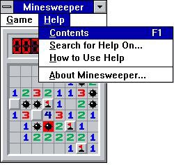

One of my favourite past times when procrastinating for any exam is playing Minesweeper. It's a truly iconic game,
with simple rules and an addictive nature. Bill Gates himself was so addicted to Minesweeper, he'd sneak into his
colleague's office after hours to play. Given it's popularity, it's surprising that many people who've known
of the game for years never knew how to play it. Many would have even opened the application, toyed with it a bit,
but never really learn the rules of it. So why is that? I wrote an article on Medium to
answer exactly that question,
but you can also check it out below:
Why no one knows how to play Minesweeper.
Unlike many games and features built by corporations today, Minesweeper was built during a time where developers
and
computer scientists were largely hobbyists at heart. The first iterations of Minesweeper as we know it was built
by
Robert Donner who was hired by Microsoft in 1989. Originally a programming exercise by Donner, it’s now one of
the
most iconic computer games next to the likes of Pong and Tetris.
Donner noted that, while he worked for the company, Minesweeper was written by himself, in his own time, and
freely
distributed within the company. It was a hobby that followed years of development, changing through some of the
earliest forms of AB testing (watching his friends play the game) and never followed strict timelines or
budgets. It
was, however, a rare case of when an intended audience eventually emerged, and the game developed a new function
while the functionality itself remained. Minesweeper was selected for release on Windows 3.1 in 1992 as a tool
to
get users used to right-clicking by placing down flags.

No instructions in sight!
From the perspective of a hobby project, the interface of the classic Minesweeper made sense. The familiarity of
the
game internally may have been overlooked when it was distributed. No instructions appear when you first click
into
the game. The interface itself is simple; a yellow smiley stares back at you above an 8x8 grid of squares. Here,
bevelled squares give the impression that the pieces are raised and button-like. At the top of the window were
two
options: Game and Help. The underlined(here bolded)letters indicated the keyboard shortcuts associated with the
tabs. The designers of Minesweeper clearly thought that the users would be accessing these tabs fairly often.
The game menu, no instructions here!
So why is it that everyone recognises the game, but so few people know how to play it? The reason likely lies
behind
how the rules of the game were presented. Or rather, how they were never presented in the first place. When
first
seeing the interface, the instinct of anyone would be to click any box on the grid. Instantly, the counter
begins
counting up, increasing urgency. On the grid itself, a grey box, sometimes with a number, is revealed, causing a
chunk of boxes around it to also uncover. Despite all the new information that appears on the board, not much is
useful in learning how to play the game.
One might’ve tried to right-click at one point and noticed a red flag being placed. But there were never any
affordances involved beyond right-clicking on a box. One would largely learn the game through trial and error.
When
clicking on a square with a bomb however, the interface lets the user know with cues that this is a “game over”
event. Explosions are heard, the smiley face turns into the classic x’d out eyes, and all the locations of bombs
appear on the map. You might be able to infer from the numbers how to play, but if you didn’t make it far into
the
game to reveal enough squares with numbers, this was a difficult task.
In reality, the rules of the game are simple. Numbers on squares were just an indication of the number of bombs
surrounding that square. Flags helped the player mark and remember the location of bombs. These simple rules
were
easy to memorize and apply; learning them seemed to be a challenge.
So how might we change the interface to make it easier to learn? Here’s one of my suggestions:
But on a serious note, a change that could help is a better immediate visual indicator that a mine is present
like
the image below. Immediately after your first click, a square surrounded by 1’s appears. Clicking on this square
would reveal a bomb. The user can then make a connection between a square surrounded by 1’s to be a square with
a
bomb, and subsequently the numbers to be the number of bombs around a square.
Another change that could work would be to reveal the whole board once a player reaches game over, which they
inevitably will on their first play.